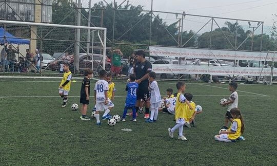

Categoría U5
Honduras Rush • Niñ@s 3-5 añosEntrenamientos de Fútbol U-5 diseñados para niños y niñas de 3 a 5 años, enfocados en el desarrollo motriz, coordinación y amor por el fútbol a través de juegos y actividades divertidas. Las sesiones se realizan en un ambiente seguro y guiado por entrenadores capacitados, ideales para que los más pequeños den sus primeros pasos en la cancha.